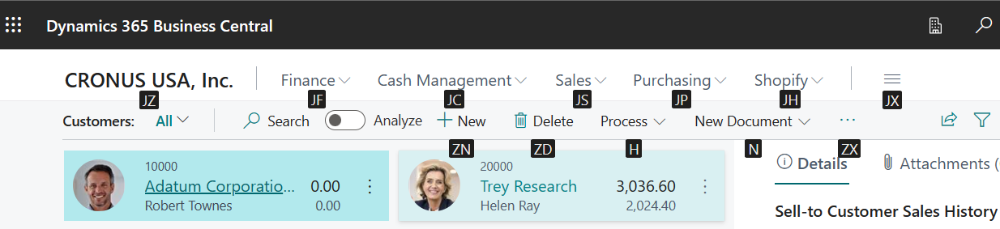

Tastenkombinationen
Dieser Artikel gibt einen Überblick über einige der Tastenkombinationen, die Sie nutzen können, wenn Sie mit Business Central arbeiten.
Einen Überblick über die gängigsten Tastenkombinationen finden Sie unter Tastenkombinationen (nur PC).
Tipp
Für eine grafische Darstellung der am häufigsten verwendeten Tastenkombinationen wählen Sie das folgende Bild und laden Sie die PDF-Datei herunter.

Matrix
Die Tastenkombinationseingabehilfe kann es effizienter und einfacher machen, um zu verschiedenen Bereichen und Elementen auf einer Seite zu navigieren. Die meisten Webbrowser unterstützen diese Tastenkombinationen, das jeweilige Verhalten kann sich jedoch leicht unterscheiden.
Hinweis
Die in diesem Hilfethema beschriebenen Tastenkombinationen beziehen sich auf das US-Tastaturlayout. Möglicherweise entsprechen die Tasten anderer Tastaturlayouts nicht exakt denen auf der US-Tastatur.
Die meisten Verknüpfungen sind gleich, unabhängig davon, ob das Betriebssystem Windows oder macOS ist. Einige Verknüpfungen unterscheiden sich jedoch für macOS. Diese Verknüpfungen sind in den folgenden Abschnitten in Klammern angegeben.
Hinweis
Business Central unterstützt nur einen Zeichensatz für Daten. Daher werden einige Zeichen in Ihrer Umgebung möglicherweise nicht unterstützt und beim Abrufen von Daten, die mit einem anderen Zeichensatz eingegeben wurden, können möglicherweise Probleme auftreten. Dies gilt möglicherweise auch für Tastaturkombinationen. So kann es beispielsweise sein, dass Ihre Umgebung nur englische und russische Zeichen unterstützt. Wenn Sie in diesem Fall die Daten in einer anderen Sprache eingeben, werden diese möglicherweise nicht ordnungsgemäß gespeichert. Wenden Sie sich an den zuständigen Systemadministrierenden, und erkundigen Sie sich nach den Sprachen, die von Ihrer Installation von Business Central unterstützt werden.
Hinweis
Zusätzlich zu den in diesem Artikel beschriebenen globalen Tastenkombinationen stehen eine Reihe von geschäftsspezifischen Tastenkombinationen zur Verfügung. In der generischen Version von Business Central Zum Beispiel, bucht F9 einen Beleg und STRG+F7 zeigt die Finanzbuchungen für einen Datensatz wenn Sie den Datensatz in der Karte öffnen. Dieser Artikel enthält einige der gängigeren geschäftsspezifischen Tastenkombinationen, die in Kursivschrift angezeigt werden. Beachten Sie, dass die tatsächlichen Verknüpfungen in Ihrer Lösung unterschiedlich sein können. In der Benutzeroberfläche wird die Tastenkombination in der QuickInfo für die betreffende Aktion angezeigt.
Allgemeine Tastenkombinationen
Die folgende Tabelle beschreibt Tastenkombinationen, um in verschiedenen Elementen zu navigieren und diese aufzurufen. Zu den Elementen gehören Aktionen, Dropdownlisten, Suchvorgänge usw. Details über die Tastenkombinationen zum Navigieren von Datensätzen, wenn Sie innerhalb einer Liste sind, finden Sie im nächsten Abschnitt.
| Wählen Sie diese Tasten aus (in Mac Os) |
Vorgehensweise |
|---|---|
| Alt | Zugriffsschlüssel zum Auswählen von Aktionen in der Aktionsleiste und im Navigationsmenü auf der Seite anzeigen. Weitere Informationen finden Sie unter Zugriffsschlüssel. |
| ALT+NACH-UNTEN-TASTE | Öffnen einer Dropdownliste, um einen Wert für ein Feld suchen. |
| Strg+Option+Pfeil nach unten | Öffnen Sie die Karte oder Listenseite eines zugehörigen Datensatzes, gefiltert nach dem Wert im Nachschlage- oder AssistEdit-Feld. |
| Alt+Nach oben Pfeil | Anzeigen von QuickInfo für ein Feld oder eine Spaltenüberschrift einer Tabelle. Wenn das Feld Überprüfungsfehler hat, wählen Sie ALT+NACH-OBEN, um den Überprüfungsfehler anzuzeigen. Wählen Sie Esc oder ALT+NACH-OBEN, um die QuickInfo zu schließen. |
| F2 | Schalten Sie zwischen der Auswahl des gesamten Feldwerts oder der Platzierung des Cursors am Ende des Feldwerts um. |
| Alt+F2 | Infoboxbereich anzeigen und ausblenden. |
| Alt+Umschalt+F2 | Umschalten zwischen Einzelheiten und Anhängen im FactBox-Bereich. |
| Alt+O | Fügen Sie eine neue Notiz für den ausgewählten Datensatz hinzu, auch wenn das FactBox-Fenster nicht geöffnet ist. |
| Alt+Q (Strg+Option+Q) |
Öffnen Sie das Fenster Wie möchten Sie weiter verfahren. Weitere Informationen finden Sie unter Suchen von Seiten und Informationen mit „Sie wünschen ...“. |
| Strg+Alt+Q (Strg+Option+Cmd+Q) |
Öffnen Sie die Seite Posten suchen, um Belege und Posten zu finden, die auf der Grundlage gemeinsamer Informationen wie Belegnummer oder Buchungsdatum miteinander in Beziehung stehen. Weitere Informationen finden Sie unter Suchen zugehöriger Entitäten für gebuchte Belege |
| Alt+N | Öffnen Sie eine Seite, um einen neuen Datensatz zu erstellen. (Ähnlich wie bei der Auswahl der Neu und + Aktionen.) |
| Alt+Umschalt+N | Schließen Sie eine neu erstellte Seite und öffnen Sie eine neue, um einen neuen Datensatz zu erstellen. Ebenso bucht Alt+F9 einen Beleg und erstellt ein neues. |
| Alt+T | Öffnen der Seite Meine Einstellungen. |
| Alt+Nach-rechts-Taste | Nachschlagen zusätzlicher Informationen oder zugrunde liegender Werte für ein Feld, das die |
| Strg+Alt+Umschalttaste+C | Informationen in der Unternehmenskennzeichnung anzeigen. Seit Business Central 2022 Veröffentlichungszyklus 2 (Version 21) wird diese Tastenkombination nicht mehr unterstützt und wurde durch Strg+O ersetzt. |
| Strg+Alt+F1 | Öffnen und schließen Sie den Seitenüberprüfungsbereich. Der Seitenüberprüfungsbereich zeigt Informationen zur Seite, wie deren Herkunftstabelle, Felder, Filter, Erweiterungen und mehr. Weitere Informationen finden Sie unter Überprüfen von Seiten. |
| Strg+C | Den Wert des Felds kopieren. Wenn das Feld im Fokus liegt und der Text in diesem Feld nicht ausgewählt ist, wird der gesamte Wert kopiert. Wenn Sie Text in diesem Feld auswählen, wird nur der markierte Text kopiert. |
| Strg+F1 | Öffnet je nach Business Central-Version den Hilfebereich oder einen Business Central-Hilfeartikel zu Microsoft Learn, je nach Business Central-Version. |
| Strg+F12 | Wechseln Sie zwischen der breiten und schmalen Layout-Ansicht. |
| Strg + Auswahl | Navigieren Sie während der Personalisierung oder Anpassung, wenn die Aktion mit einer Pfeilspitze markiert ist. Weitere Informationen finden Sie unter Personalisieren Sie Ihren Arbeitsplatz. |
| Strg+F5 | Business Central Anwendung neu laden. (Dies ist gleich, wie Browser aktualisieren/neu laden.) |
| F5 | Aktualisieren Sie die Daten der aktuellen Seite. Verwenden Sie diese Taste, um sicherzustellen, dass die Seite mit sämtlichen Änderungen aktualisiert wird, die andere vorgenommen haben, während Sie arbeiten. |
| Strg+O | Öffnen Sie Verfügbare Unternehmen zum Wechseln zu einem anderen Unternehmen oder einer anderen Umgebung. Weitere Informationen finden Sie unter Wechseln zu einem anderen Unternehmen oder einer anderen Umgebung. |
| Eingabe | Das Element aktivieren oder darauf zugreifen oder steuern, das im Fokus liegt. |
| Esc | Schließen Sie die aktuelle Seite oder die Dropdownliste. |
| Register | Verschieben Sie den Fokus auf die folgende oder vorherige Steuerung oder das Element auf einer Seite wie Schaltflächen, Felder oder Artikel in einer Liste. |
| UMSCHALT+TAB | Verschieben Sie den Fokus auf die folgende oder vorherige Steuerung oder das Element auf einer Seite wie Schaltflächen, Felder oder Artikel in einer Liste. |
| J und N | Aktivieren Sie die Ja- und Nein-Schaltflächen in Dialogfeldern. Die tatsächlichen Schlüssel variieren je nachdem, welche aktuelle Sprache unter Meine Einstellungen festgelegt ist. Wählen Sie beispielsweise J, um die Schaltfläche Ja zu aktivieren, wenn Sie die deutsche Sprache verwenden. |
Tastenkombinationen in Listen
Die folgende Tabelle beschreibt Tastenkombinationen, die Sie auf einer Listenseite verwenden können. Die Verknüpfungsaktion ist abhängig davon, ob die Seite in der Listenansicht oder der Kachelansicht mit nebeneinander angeordnet Fenstern angezeigt wird.
Allgemein
| Wählen Sie diese Tasten aus (in Mac Os) |
Um dies in einer Listenansicht zu tun | Um dies in einer Kachelansicht zu tun |
|---|---|---|
| Alt+F7 | Sortieren Sie die ausgewählte Spalte in aufsteigender oder absteigender Reihenfolge. | Nicht anwendbar. |
| Alt+N | Fügen Sie eine neue Zeile in eine bearbeitbare Liste ein, wie die Sachbudgets Seite. | Das gleiche. |
| Shift+F9 | Veröffentlichen und drucken Sie ein Dokument. | Das gleiche. |
| Shift+F10 | Öffnen Sie ein Menü mit Optionen, die für die ausgewählte Zeile verfügbar sind. | Das gleiche. |
| Alt+D | Öffnen Sie die Dimensionssatzeinträge. | Das gleiche. |
| Strg+F7 | Öffnen Sie Posten, Protokolleinträge, Kosteneinträge usw. | |
| Strg+F9 | Geben Sie den Beleg frei. | Das gleiche. |
| F7 | Öffnen Sie Statistiken. | Das gleiche. |
| F9 | Buchen Sie Belege, stellen Sie sie aus, und registrieren und stornieren Sie sie. | Das gleiche. |
| Umschalttaste+Strg+F | Senden Sie vorgeschlagene Zeilen an die Seite Cashflow-Arbeitsblatt. | Nicht anwendbar. |
| Umschalttaste+Strg+I | Zeigen Sie dem Positionsartikel im Beleg oder Buch.-Blatt zugewiesene Seriennummern und Chargennummern an, oder bearbeitet diese. | Nicht anwendbar. |
Navigieren Sie zwischen Zeilen und Spalten
Raster mit Zeilen und Spalten existieren auf vielen Seitentypen in Business Central, wie z.B. Listenseiten und Zeilen Teilen auf Dokumenten. Die Bewegung von einer Zelle zur anderen über ein Raster ist vollständig über die Tastatur möglich.
| Wählen Sie diese Tasten aus (in Mac Os) |
Um dies in einer Listenansicht zu tun | Um dies in einer Kachelansicht zu tun |
|---|---|---|
| Strg+Pos1 (Fn+STRG+NACH-LINKS-TASTE) |
Wählen Sie die erste Zeile in der Liste aus; der Fokus bleibt in der gleichen Spalte. | Navigieren zur ersten Kachel in der ersten Zeile. |
| Strg+Ende (Fn+STRG+NACH-RECHTS-TASTE) |
Wählen Sie die letzte Zeile in der Liste aus; der Fokus bleibt in der gleichen Spalte. | Navigieren zur letzten Kachel in der letzten Zeile. |
| Pos1 (Fn+NACH-LINKS-TASTE) |
Navigieren zum ersten Feld in einer Zeile. | Navigieren zur ersten Kachel in einer Zeile. |
| Ende (Fn+NACH-RECHTS-TASTE) |
Navigieren zum letzten Feld in einer Zeile. | Navigieren zur letzten Kachel in einer Zeile. |
| Eingabe | Öffnet den Datensatz, der diesem Feld zugeordnet ist. Nur relevant, wenn eine Kartenseite dem Datensatz zugeordnet wird. |
Öffnet den Datensatz. Nur relevant, wenn eine Kartenseite dem Datensatz zugeordnet wird. |
| Strg+Eingabetaste | Um den Fokus zum nächsten Element außerhalb der Liste zu verschieben. | Um den Fokus zum nächsten Element außerhalb der Liste zu verschieben. |
| Seite nach oben (Fn+NACH-OBEN-TASTE) |
Scrollen, um den Zeilensatz über der aktuellen Zeile in der Darstellungsform anzuzeigen. | Scrollen, um den Kachelsatz über den aktuellen Kacheln in der Darstellung anzuzeigen. |
| Seite nach unten (Fn+NACH-UNTEN-TASTE) |
Scrollen, um den Zeilensatz unter der aktuellen Zeile in der Darstellungsform anzuzeigen. | Scrollen, um den Kachelsatz unter der aktuellen Zeile in der Darstellungsform anzuzeigen. |
| NACH-UNTEN-TASTE | Navigieren zum darüberliegenden Feld in der Zeile darunter. | Navigieren zur darüberliegenden Kachel in der Zeile darunter. |
| NACH-OBEN-TASTE | Navigieren zum darüberliegenden Feld in der Zeile darüber. | Navigieren zur darüberliegenden Kachel in der Zeile darüber. |
| NACH-RECHTS-TASTE | Navigieren Sie in einer schreibgeschützten Liste in derselben Zeile zum nächsten Feld rechts. Navigieren Sie in einer bearbeitbaren Liste innerhalb des aktuellen Felds nach rechts. |
Navigieren zur gleichen Zeile in der nächsten Kachel rechts. |
| NACH-LINKS-TASTE | Navigieren zur gleichen Zeile im vorherigen bearbeitbaren Feld links. In einer bearbeitbaren Liste bewegen Sie die Linke im aktuellen Feld. |
Navigieren zur gleichen Zeile in der vorherigen Kachel links. |
| Tab | Navigieren Sie in einer schreibgeschützten Liste in derselben Zeile zum nächsten Feld rechts. | Nicht anwendbar. |
| UMSCHALT+TAB | Navigieren zur gleichen Zeile im vorherigen bearbeitbaren Feld links. | Nicht anwendbar. |
Auswählen, Kopieren und Einfügen
| Wählen Sie diese Tasten aus (in Mac Os) |
Um dies in einer Listenansicht zu tun | Um dies in einer Kachelansicht zu tun |
|---|---|---|
| Strg + Auswahl (Cmd + Auswahl) |
Erweitern Sie die Auswahl von Zeilen, um die Zeile einzuschließen, die Sie auswählen. | Nicht anwendbar. |
| Umschalttaste + Auswahl | Erweitern Sie die Auswahl von Zeilen, um die Zeile einzuschließen, die Sie auswählen und alle Zeilen dazwischen. Sie können dieses verwenden, nachdem Sie STRG+NACH-OBEN-TASTE oder STRG+ NACH-UNTEN-TASTE verwendet haben, um Ihre Auswahl zu erweitern. |
Nicht anwendbar. |
| STRG+NACH-OBEN-TASTE (STRG+Cmd+NACH-OBEN-TASTE) |
Verschieben Sie den Fokus auf die Zeile darüber und halten Sie die aktuelle Zeile ausgewählt. | Nicht anwendbar. |
| STRG+NACH-UNTEN-TASTE (STRG+CMD+NACH-UNTEN-TASTE) |
Verschieben Sie den Fokus auf die Zeile darunter und halten Sie die aktuelle Zeile ausgewählt. | Nicht anwendbar. |
| STRG+LEERTASTE (Ctrl+Cmd+Space) |
Erweitern Sie die Auswahl von Zeilen, um die fokussierte Zeile einzuschließen. Sie können dieses verwenden, nachdem Sie STRG+NACH-OBEN-TASTE oder STRG+NACH-UNTEN-TASTE verwendet haben, um Ihre Auswahl zu erweitern. |
Nicht anwendbar. |
| Strg+A | Alle Zeilen auswählen. | Nicht anwendbar. |
| Strg+C (Cmd+C) |
Kopiert die ausgewählte Zeile in die Zwischenablage. | Ja, aber nur für eine einzelne ausgewählte Kachel. |
| Strg+V (Befehl+V) |
Fügen Sie die ausgewählten Zeilen der E-Mail die Zwischenablage in die aktuelle Seite oder den externen Dokument, Microsoft Excel z oder Outlook ein. Sie können dies nur in bearbeitbaren Listen tun. | Nicht anwendbar. |
| UMSCHALTTASTE+NACH-OBEN-TASTE | Erweitern Sie die Auswahl von Zeilen, um die Zeile darüber einzuschließen. | Nicht anwendbar. |
| Umschalt+Pfeil nach unten | Erweitern Sie die Auswahl von Zeilen, um die Zeile darunter einzuschließen. | Nicht anwendbar. |
| Umschalt+Seite nach Oben (UMSCHALTTASTE+Fn+NACH-OBEN-TASTE) |
Erweitern Sie die Auswahl von Zeilen, um alle sichtbaren Zeilen über der aktuellen Auswahl von Zeilen zu berücksichtigen. | Nicht anwendbar. |
| Umschalttaste+Seite nach Unten (Umschalt+Fn+Pfeil nach unten) |
Erweitern Sie die Auswahl von Zeilen, um sichtbare Zeilen unter der aktuellen Auswahl von Zeilen zu berücksichtigen. | Nicht anwendbar. |
| F8 | Kopieren Sie das Feld in der gleichen Spalte der Zeile oben, und fügen Sie es in die aktuelle Zeile ein. Sie können dies nur in bearbeitbaren Listen tun. Mit dieser Tastenkombination, gefolgt von TAB, können Sie schnell Felder in Zeilenartikeln füllen, die denselben Wert haben wie die Reihe darüber. | Nicht anwendbar. |
Listen suchen und filtern
| Wählen Sie diese Tasten aus (in Mac Os) |
Vorgehensweise |
|---|---|
| F3 | Schaltet das Suchenfeld um.
|
| Umschalt+F3 | Öffnen und schließen Sie den Filterbereich.
|
| Strg+Umschalt+F3 | Öffnen und schließen Sie den Filterbereich.
|
| Alt+F3 | Wechseln Sie die Filterung zum ausgewählten Wert.
|
| Umschalt+Alt+F3 | Öffnen Sie den Filterbereich und fügen Sie einen Filter für die ausgewählte Spalte in der Liste hinzu. Der Fokus liegt auf dem neuen Filterfeld, mit dem Sie die Filterkriterien sofort eingeben können. Dieses ist identisch mit, Filter aus der Spaltenüberschrift. Wenn es bereits einen Filter in diesem Feld gibt, wird ein neuer Filter hinzugefügt. |
| Strg+Umschalt+Alt+F3 | Filter zurücksetzen. Dieses ist identisch mit, Rücksetzungsfilter im Filterbereich ", und es trifft auf Feld und Gesamtfilter zu. Filter kehren zu den Standardfiltern für die geltende Ansicht zurück. Wenn Alle die aktuelle Ansicht, gleicht der Rückkehr zu einer ungefilterten Ansicht mit allen Datensätzen. |
| Strg+Eingabetaste | Ändern Sie den Fokus des Filterbereichs zurück zur Liste. |
Tastenkombinationen in Karten und Belegen
Folgende Tastenkombinationen sind auf Kartenseiten wie Debitorenkarte und Belegseiten wie Verkaufsauftrag zum Anzeigen und Änderungen von Datensätzen verfügbar.
| Wählen Sie diese Tasten aus (in Mac Os) |
Vorgehensweise |
|---|---|
| Alt+D | Öffnen Sie die Dimensionssatzeinträge. |
| Alt+F6 | Schalten Sie das Ein-/Ausklappen für den aktuellen FastTab oder Teil (Unterseite) ein/aus. |
| Alt+F9 | Erstellen Sie einen neuen Beleg, und buchen Sie ihn. |
| Alt+G | Öffnen Sie die Seite Posten finden, um Posten zu finden, die sich auf den gebuchten Beleg beziehen. Funktioniert auch mit Listen. |
| Alt+N | Öffnen Sie eine Seite für das Erstellen eines neuen Datensatzes auf die gleiche Weise wie das Auswählen der Aktion Neu. |
| Alt+Umschalt+N | Schließen Sie eine Seite und öffnen Sie eine neue Seite, um einen neuen Datensatzes auf die gleiche Weise wie das Auswählen der Aktion Ok und Neu. |
| Alt+Umschalt+W | Öffnen Sie die aktuelle Karte oder das Dokument in einem neuen Fenster. Weitere Informationen finden Sie unter Multitasking über mehrere Seiten. |
| Strg+Eingabetaste | Speichern und schließen Sie die Seite. |
| STRG+NACH-UNTEN-TASTE | Öffnen Sie den nächsten Datensatz für eine Einheit. |
| STRG+NACH-OBEN-TASTE | Öffnen Sie den vorherigen Datensatz für eine Einheit. |
| Strg+Einfügen | Fügen Sie eine neue Zeile in Dokumente ein. |
| STRG+ENTF | Löschen Sie die Zeile in Dokumenten, Journalen und Arbeitsblättern. |
| Strg+F7 | Öffnen Sie Posten, Protokolleinträge, Kosteneinträge usw. |
| Strg+F9 | Geben Sie den Beleg frei. |
| Strg+Umschalt+F12 | Maximieren Sie den Werbebuchungsteil auf einer Dokumentseite. Wählen Sie die Tasten erneut, um zur normalen Anzeige zurückzukehren. Weitere Informationen finden Sie unter Fokussieren auf Positionsartikel. |
| F6 | Navigieren Sie zum nächsten Inforegister oder Teil (Unterseite). |
| F7 | Öffnen Sie Statistiken. |
| F9 | Buchen Sie Belege, stellen Sie sie aus, und registrieren und stornieren Sie sie. |
| Umschalttaste+Strg+F9 | Buchen, Drucken und Einlagern des Wareneingangs. |
| Shift+F6 | Navigieren Sie zum vorherigen FastTab oder Teil (Unterseite). |
| Shift+F9 | Veröffentlichen und drucken Sie ein Dokument. |
| Umschalt+F11 | Ausgleichen von Posten, Abrufen von Herkunftsbelegen oder Abrufen von Lagerbelegen. |
Tastenkombinationen der Schnelleingabe für Felder
Folgende Verknüpfungen gehören zur Schnelleingabefunktion auf Karten, Belegen und Listenseiten. Auf Listen können die Verknüpfungen nicht verwendet werden, wenn die Liste in der Kachelansicht angezeigt werden. Weitere Informationen über Schnelleingabe finden Sie unter Beschleunigung der Dateneingabe mithilfe von Schnelleingabe schnellen Posten.
| Wählen Sie diese Tasten aus (in Mac Os) |
Vorgehensweise | Bemerkungen |
|---|---|---|
| Eingabe | Bestätigen Sie den Wert im aktuellen Feld und wechseln Sie zum nächsten Schnelleingabefeld. | |
| Umschalt+Eingabe | Bestätigen Sie den Wert im aktuellen Feld und wechseln Sie zum vorherigen Schnelleingabefeld. | |
| Strg+Umschalt+Eingabetaste | Bestätigen Sie den Wert in der aktuellen Spalte und wechseln Sie zum nächsten Schnelleingabefeld außerhalb der Liste. Dieses Tastenkürzel gilt für eingebettete Listen auf einer Seite wie Positionsartikel in einem Verkaufsauftrags. Damit gelangen Sie schnell aus Listen und können die Dateneingabe in anderen Feldern der Seite fortsetzen. |
Tastenkombinationen im Kalender (Datumsauswahl)
Wenn Sie ein Datumsfeld festlegen, können Sie entweder das Datum manuell eingeben oder festlegen oder einen Kalender (Datumsauswahl) öffnen, in dem Sie das Datum auswählen können Sie, das Sie möchten. Die folgende Tabelle beschreibt die Tastenkombinationen für den Kalender.
| Wählen Sie diese Tasten aus (in Mac Os) |
Vorgehensweise |
|---|---|
| Strg+Pos1 | Öffnen Sie den gewünschten Kalender, wenn geschlossen. Hinweis: Dies funktioniert nicht, wenn sich das Datumsfeld in einem Raster befindet, in dem Strg+Pos1 auf die erste Zeile springt. |
| Strg+Pos1 (Cmd+Pos1) |
Navigieren zum laufenden Monat, laufender Tag. |
| NACH-LINKS-TASTE (NACH-LINKS-TASTE) |
Navigieren zum vorherigen Tag. |
| NACH-RECHTS-TASTE (NACH-RECHTS-TASTE) |
Navigieren zum nächsten Tag. |
| NACH-OBEN-TASTE (NACH-OBEN-TASTE) |
Navigieren zur Woche, derselbe Wochentag. |
| NACH-UNTEN-TASTE (NACH-UNTEN-TASTE) |
Navigieren zur nächsten Woche, derselbe Wochentag. |
| Eingabe | Wählen Sie das fokussierte Datum aus. |
| Strg+Ende (Cmd+Ende) |
Schließen Sie den Kalender oder löschen Sie die aktuellen Datum. |
| Esc | Schließen Sie den Kalender ohne eine Auswahl, geben Sie das aktuelle Datum ein. |
| Seite nach unten | Navigieren zum nächsten Monat. |
| Seite nach oben | Navigieren zum vorherigen Monat. |
Tastenkombinationen in Datumsfeldern
| Wählen Sie diese Tasten aus (in Mac Os) |
Vorgehensweise |
|---|---|
| h | Geben Sie das aktuelle Datum ein. „T“ bedeutet „heute“. |
| a | Geben Sie das Arbeitsdatum ein. Weitere Informationen finden Sie unter Arbeitsdatum |
Tastenkombinationen in der Berichtsvorschau
| Wählen Sie diese Tasten aus (in Mac Os) |
Vorgehensweise |
|---|---|
| NACH-UNTEN-TASTE | Führen Sie einen Bildlauf zum Ende der Seite durch |
| NACH-OBEN-TASTE | Führen Sie einen Bildlauf zum Anfang der Seite durch |
| STRG+0 (null) (Cmd+0) |
Passt die gesamte Seite an die Seite an. |
| Strg+Pos1 (Cmd+Pos1) |
Zur ersten Seite des Berichts wechseln. |
| Strg+Ende (Cmd+Ende) |
Zur letzten Seite des Berichts wechseln. |
| NACH-LINKS-TASTE | Führen Sie einen Bildlauf nach links durch, wenn die Seite vergrößert ist, sodass sie nicht vollständig angezeigt wird. |
| NACH-RECHTS-TASTE | Führen Sie einen Bildlauf nach rechts durch, wenn die Seite vergrößert ist, sodass sie nicht vollständig angezeigt wird. |
| Seite nach unten (Fn+NACH-UNTEN-TASTE) |
Zur nächsten Seite des Berichts wechseln. |
| Seite nach oben (Fn+NACH-OBEN-TASTE) |
Zur vorherigen Seite des Berichts wechseln. |
Tastaturkürzel zum Vergrößern und Verkleinern
| Wählen Sie diese Tasten aus | Vorgehensweise |
|---|---|
| Strg++ | Vergrößern Sie die aktuelle Seite. |
| Strg+- | Verkleinern Sie die aktuelle Seite. |
| Strg+0 | Vergrößern Sie die aktuelle Seite auf 100 %%. |
Tastaturkürzel für den Rollen-Explorer
Der Rollen-Explorer bietet Ihnen einen Überblick und schnellen Zugriff auf alle Geschäftsfunktionen, die für Ihre Rolle verfügbar sind. Weitere Informationen finden Sie unter Suchen von Seiten mit dem Rollen-Explorer.
| Wählen Sie diese Tasten aus (in Mac Os) |
Vorgehensweise |
|---|---|
| Umschalt+F12 | Öffnen Sie den Rollen-Explorer. |
| F3 | Öffnen Sie das Feld Finden im Rollen-Explorer zum Suchen von Funktionen basierend auf einem bestimmten Suchwort oder Begriff. |
| Umschalttaste F3 oder Strg+NACH-UNTEN-TASTE | Verschiebt den Fokus auf das Nächste gefundene Feature im Rollen-Explorer. F3 verschiebt den Fokus auf das Feld Finden nach dem zuletzt gefundenen Feature. |
| Umschalttaste F3 oder Strg+Aufwärtspfeil | Verschiebt den Fokus auf das vorherige gefundene Feature im Rollen-Explorer. |
| Strg+Umschalt | Erweitern oder reduzieren Sie alle Unterknoten zusätzlich zu den Knoten der obersten Ebene, wenn Sie die Aktion Erweitern oder Reduzieren auswählen. |
Tastenkombinationen für den Ziffernblock
In der folgenden Tabelle werden die Tastenkombinationen auf einem numerischen Tastenfeld beschrieben.
| Wählen Sie diese Tasten aus (in Mac Os) |
Vorgehensweise |
|---|---|
| ALT+Dezimaltrennzeichen | Schalten Sie die Ausgabe der Dezimaltrenntaste entweder auf einen Punkt (.) oder das durch die festgelegte Region-Einstellung der Meine Einstellungen Seite Zeichen um. Weitere Informationen finden Sie unter Festlegen des Dezimaltrennzeichens, das von numerischen Tastaturen verwendet wird. |
Zugriffstasten für Aktionsleiste und Navigationsmenü
Zugriffstasten sind Tastenkombinationen, mit denen Xie zur leichteren Navigation bestimmte Aktionen in der Aktionsleiste und im Menü auswählen können, ähnlich wie bei den Zugriffstasten in Excel und Word. Sie sind im Business Central-Webclient jedoch nur verfügbar, wenn die Anzeigesprache auf Englisch eingestellt ist.
Um Zugriffstasten auf einer Seite zu verwenden, drücken Sie zuerst die Alt Taste, um Tastentipps anzuzeigen, die aus Buchstaben in kleinen Kästchen neben den Aktionen in der Aktionsleiste und im Navigationsmenü bestehen.

Um eine Aktion auszuwählen, wählen Sie die im Tastentipp angezeigte Tastenkombination aus, z. B. H oder J+F.
- Wenn die Aktion ein Untermenü mit anderen Aktionen öffnet, werden die Tastentipps für das Untermenü angezeigt, sodass Sie die Zugriffstasten weiterhin verwenden können, wenn Sie möchten.
- Wenn die Aktion eine andere Seite öffnet, sind wichtige Tipps deaktiviert. Um sie wieder anzuzeigen, drücken Sie die Alt Taste.
Siehe auch
Tastatur-Kurzübersicht – nur PC
Assistive Funktionen
Einsatzbereit in wenigen Schritten
Arbeiten mit Business Central
Häufig gestellte Fragen
Posten suchen
Kostenlose E-Learning-Module für Business Central finden Sie hier